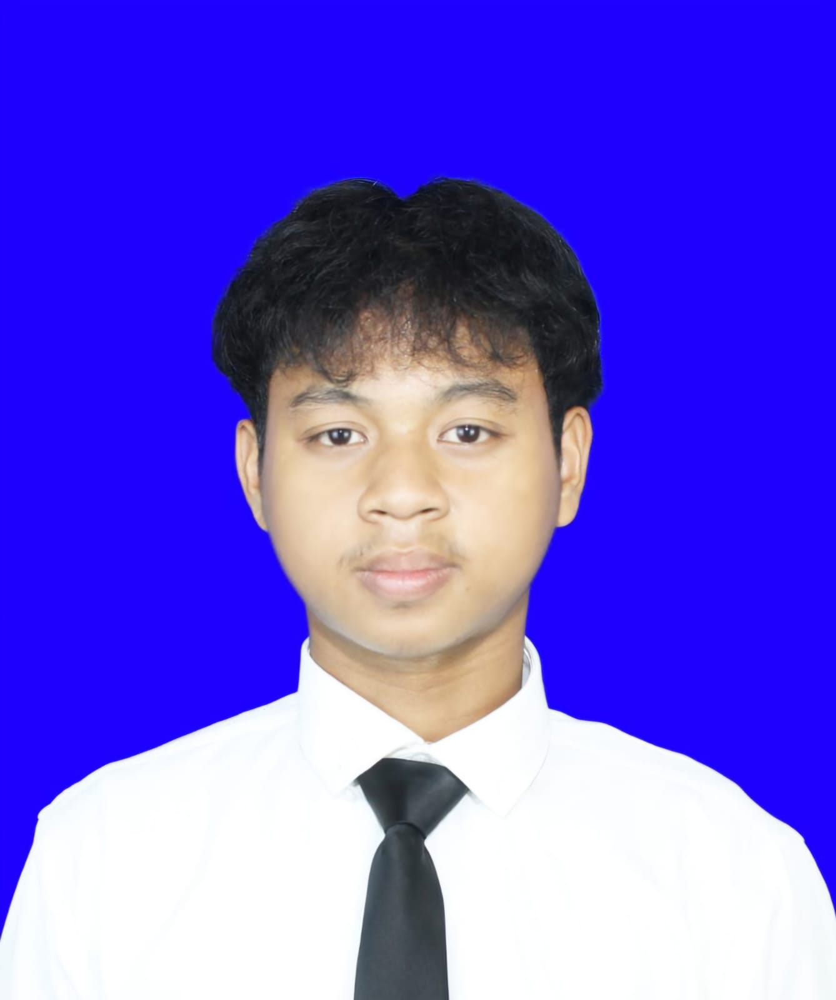

Mahasiswa Rekayasa Perangkat Lunak yang fokus pada web development, UI modern, dan membangun produk digital yang berguna. Saya suka membuat sistem yang clean, modern, dan impactful.

TRPL Student • IT
Sedikit tentang saya dan informasi singkat.
Saya memiliki minat besar dalam dunia software engineering, terutama pengembangan website modern dan sistem informasi. Saya senang belajar hal baru, membangun project nyata, dan meningkatkan kemampuan saya setiap hari.
Beberapa project terbaik yang pernah saya kerjakan.
Teknologi dan kemampuan yang saya kuasai.